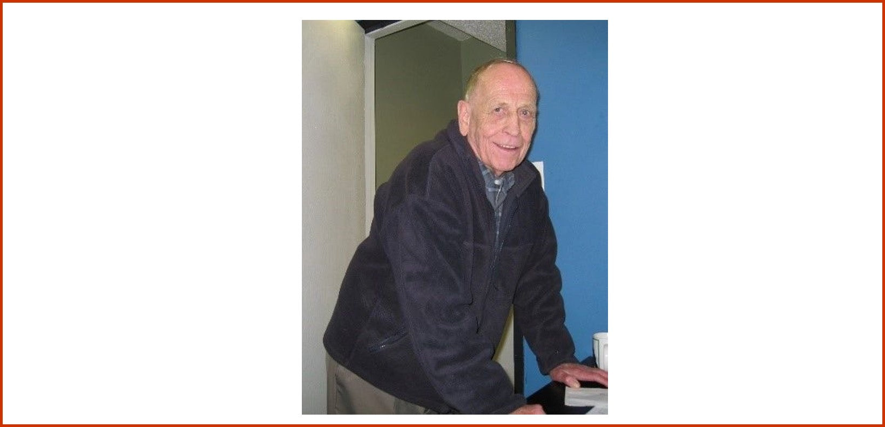
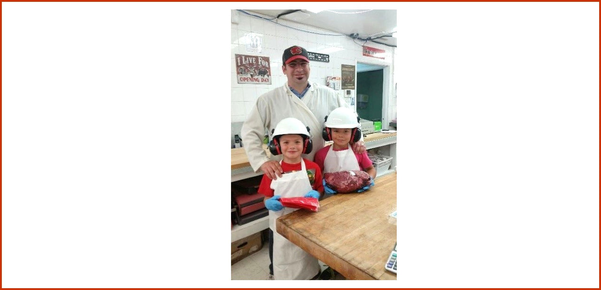

Before opening Cut Rite Meats, Svend Nielsen apprenticed and trained as a butcher in Denmark. He brought that training to Calgary and opened Cut Rite Meats in 1972, running the shop for 30 years and building relationships with Alberta farmers that the shop still relies on today.
Cut Rite Meats has been recognized by the Better Business Bureau for over 25 years of service to Calgary & area.
Jim Jackson started apprenticing under his grandfather at just 12 years old. Ten years ago, he bought Cut Rite Meats from Grandpa Svend and has been running it ever since — using the same family recipes for sausage, jerky, and pepperoni that Svend and Oma handed down.
"I come from a family of farmers and butchers, and it fills me with great pride to bring healthy and nutritious meat from Alberta farmers to your family's plate. I look forward to seeing my customers every day." — Jim Jackson

In the early morning hours of Saturday, March 7, 2026, a fire broke out at our shop. No one was hurt, but our physical location is closed while we rebuild. Our online butcher shop is still open for business — please allow about 7 days for online orders (larger orders may take longer). Thank you for the outpouring of support; without loyal customers like you, three generations of this family business wouldn't have been possible.
Questions about an order? Email cutriteonline@gmail.com or call 403-272-5159.